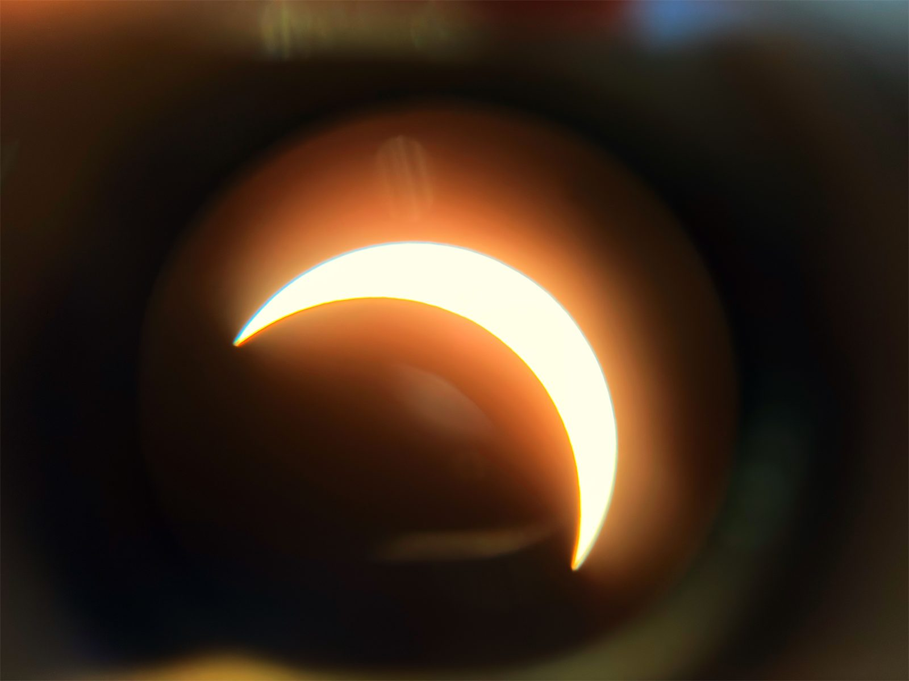
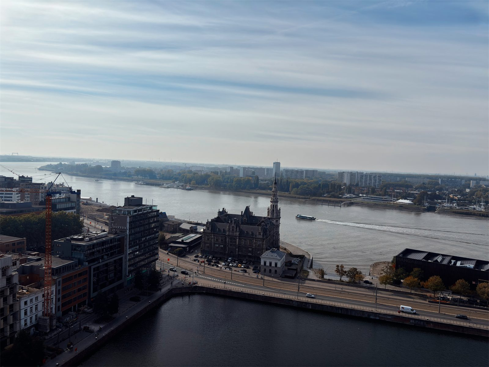
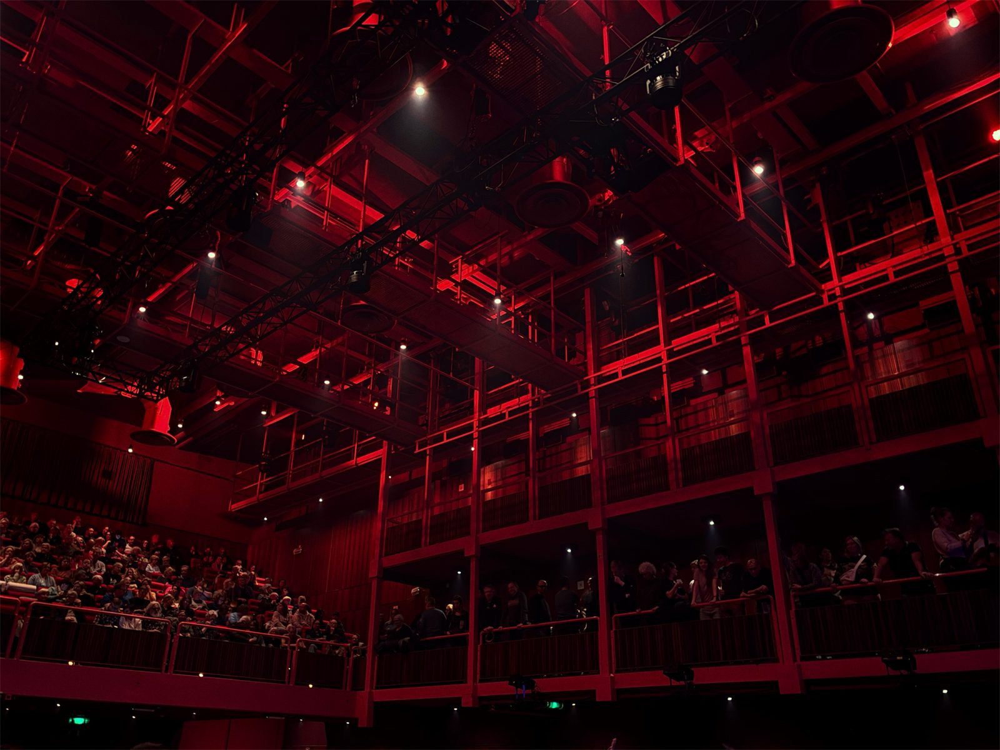
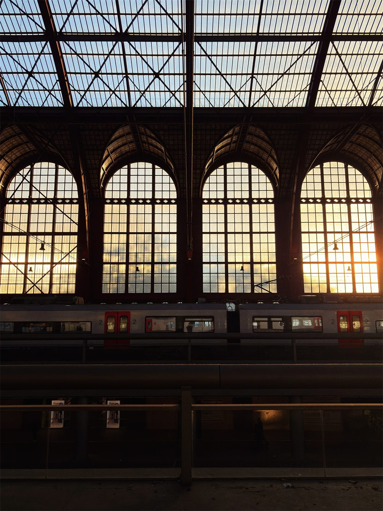
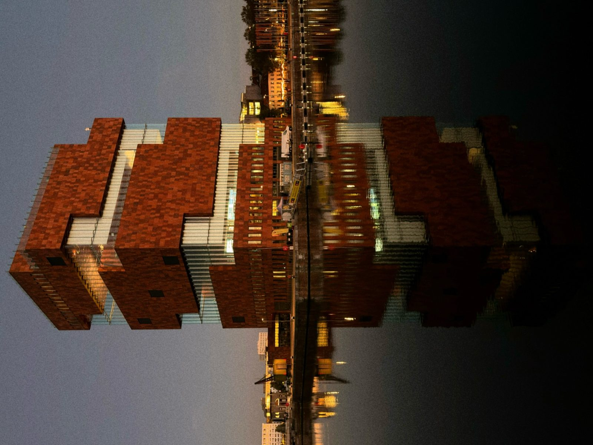
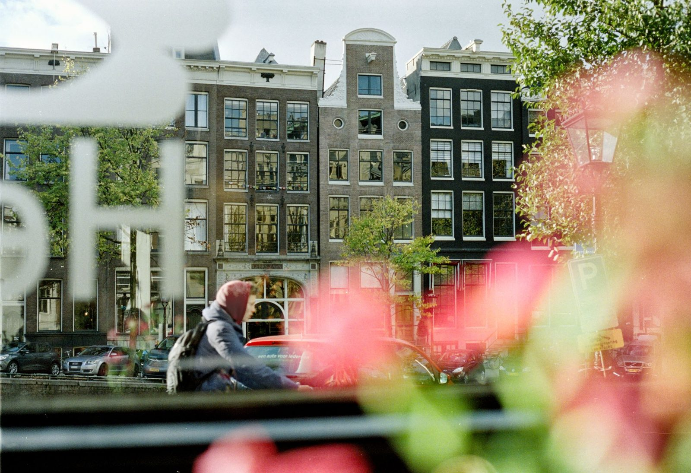
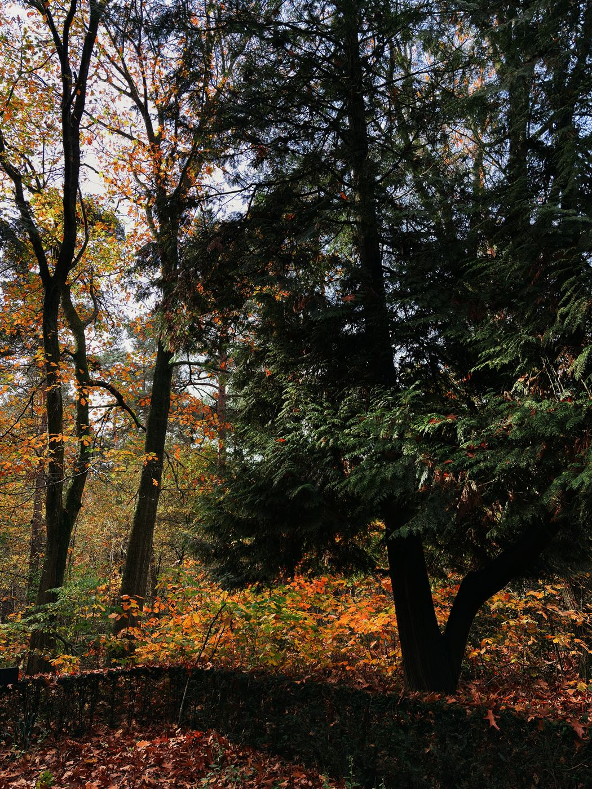
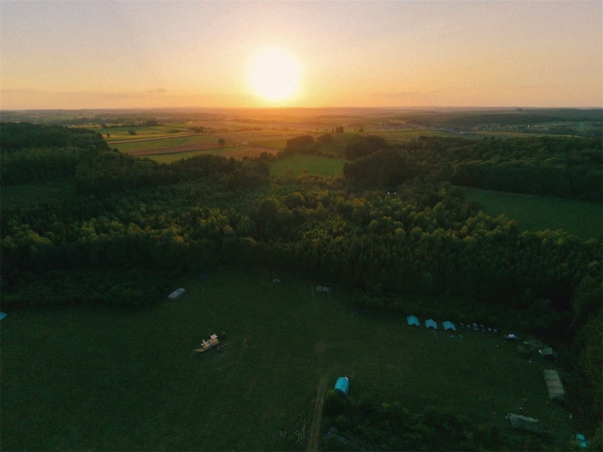

Communicatiewetenschapper.
Victor Van Sande
Ik benader communicatie op een analytische, wetenschappelijke manier, zonder daarbij de mens achter de boodschap uit het oog te verliezen.

Communicatiewetenschapper.
Ik benader communicatie op een analytische, wetenschappelijke manier, zonder daarbij de mens achter de boodschap uit het oog te verliezen.

Portfolio
Communicatie, media en journalistiek, (web)design, psychologie, technologie en leiderschap: vakgebieden die in mijn parcours voortdurend in elkaar overlopen. Doorgaans zet ik ze dan ook samen in.

Huidige werkgever
Ik werf fondsen bij bedrijven en particulieren en via projectoproepen, om de werking van Gekkoo mee te financieren en verder uit te bouwen.

Opleiding
Psychologie, lerarenopleiding en communicatiewetenschappen, in die volgorde. Elke opleiding bouwde inhoudelijk voort op de vorige.

Masterproef
Kwantitatief onderzoek naar (des)informatie, 241 respondenten

Over mij
Van jongs af aan hoorde ik dat ik ‘iets met mensen’ moest doen. Mijn opleidingen gaven dat instinct een wetenschappelijke onderbouw, mijn jeugdbeweging een versnelde praktijkopleiding. Die nieuwsgierigheid is gebleven, ook naar de omgeving waarin mensen zich bewegen.

10+ jaar engagement
Een jeugdbeweging leert je zaken die in geen enkele opleiding aan bod komen: samenwerken in een erg divers team, verantwoordelijkheid opnemen en improviseren zodra het plan verandert.

Contact
Ik sta open voor vragen, projecten en een vrijblijvende kennismaking. Ik ben halftijds beschikbaar, in loondienst of freelance, in de regio Herentals–Antwerpen. Ik antwoord doorgaans snel.
Nov 2026Antwerpen, België
Site ontworpen door Victor Van Sande
Communicatiewetenschapper. Ik benader communicatie op een analytische, wetenschappelijke manier, zonder daarbij de mens achter de boodschap uit het oog te verliezen.
Vakgebieden die in elkaar overlopen
Communicatie, media en journalistiek, (web)design, psychologie, technologie en leiderschap: vakgebieden die in mijn parcours voortdurend in elkaar overlopen. Doorgaans zet ik ze dan ook samen in.
Tijdens mijn master lag de nadruk op strategische, heldere communicatie, met bijzondere aandacht voor data, gedrag en het discours in media en politiek.
Webdesign, visuele identiteit, fotografie en film. Een idee werk ik zelf uit tot beeld, en vaak ook tot de interface waarin dat beeld belandt.
Tien jaar ervaring in het aansturen van een team en het organiseren van evenementen. Zo leidde ik zeven jaar een ploeg van gemiddeld twintig leiding.
Een veelzijdig parcours
Sinds mei 2026 werk ik bij Gekkoo, daarvoor deed ik ervaring op via stages en studentenjobs. Dit werk draait doorgaans rond kinderen en jongeren, wat goed aansluit bij mijn achtergrond in psychologie en onderwijs.
Huidige werkgever
Gekkoo organiseert speelpleinwerking en vakantiekampen voor kinderen in Vlaanderen en de Ardennen. gekkoo.be ↗
Ik werf fondsen bij bedrijven en particulieren en via projectoproepen, om de werking van Gekkoo mee te financieren en verder uit te bouwen.
Als inhoudelijk medewerker stond ik in voor contentcreatie, visuele en grafische vormgeving en externe communicatie. Ik onderhield de contacten met andere speelpleinwerkingen en bracht mijn achtergrond in communicatie, psychologie en jeugdwerk samen in één rol. In de zomer van 2026 was ik bovendien verantwoordelijk voor een eigen project in Essen.
Na mijn master nam ik de tijd om gericht te zoeken naar een plek waar communicatie, psychologie en jeugdwerk samenkomen. Ondertussen bleef ik hoofdleider bij KSA Herentals en beheerde ik hun website.
Drie opleidingen die op elkaar voortbouwen
Psychologie, lerarenopleiding en communicatiewetenschappen, in die volgorde. Elke opleiding bouwde inhoudelijk voort op de vorige.
In deze master verdiepte ik me in journalistiek, media en de opkomende technologieën die deze vakgebieden vormgeven. Dit verbreedde mijn kijk op media, politiek en het discours daartussen. De opleiding sloot af met een kwantitatieve masterproef over (des)informatie.
Afgestudeerd met onderscheiding
Deze opleiding richtte zich op Engels en de natuurwetenschappen, en op hoe je die vakken aan jongeren overbrengt. Dit bevestigde bovendien mijn C2-niveau Engels. Zo gaf ik tijdens mijn stages les Engels en wetenschappen.
Afgestudeerd met onderscheiding
In mijn eerste opleiding leerde ik zowel groepen als individuen begeleiden, telkens toegepast in een reële context. Met de officiële titel psychologisch consulent kan ik hulpvragen inschatten, erover reflecteren en gericht feedback geven, op basis van actuele wetenschappelijke inzichten.
Titel: psychologisch consulent
Masterproef · UAntwerpen
Een kwantitatieve analyse van epistemisch vertrouwen, mediavertrouwen en complotdenken bij Vlamingen. De studie gaat na hoe verschillende vormen van (wan)vertrouwen samenhangen met de vatbaarheid voor complottheorieën in een post-truth samenleving.
Een wetenschappelijke blik op mensenwerk
Hieronder staan de talen die ik spreek, mijn vaardigheden en tools, en wat me buiten het werk bezighoudt. Fotografie neemt daarin een vrij grote plaats in, wat ook de foto's op deze site verklaart.
Van jongs af aan hoorde ik dat ik ‘iets met mensen’ moest doen. Mijn opleidingen gaven dat instinct een wetenschappelijke onderbouw, mijn jeugdbeweging een versnelde praktijkopleiding. Die nieuwsgierigheid is gebleven, ook naar de omgeving waarin mensen zich bewegen.
Wat ik buiten het werk doe, staat daar doorgaans niet los van.
Fotografie en montage, met een voorkeur voor architectuur, natuur en astrofotografie.
Nieuwe technologieën en hun impact op mens en samenleving.
Hoe mensen denken en voelen blijft me fascineren, ook buiten het werk.
10+ jaar engagement
Een jeugdbeweging leert je zaken die in geen enkele opleiding aan bod komen: samenwerken in een erg divers team, verantwoordelijkheid opnemen en improviseren zodra het plan verandert.
Dé jeugdbeweging met de blauwe hemden en oranje sjaaltjes in het hart van Herentals.
Ik richtte ksaherentals.be ↗ zelfstandig op en beheer die als hoofdplatform voor de volledige werking: ledenplanning, activiteiten én een maandelijkse blog die ik zelf schrijf en publiceer.
Verantwoordelijk voor het leiden van de jeugdbeweging: ik coördineerde een team van gemiddeld 20 jongvolwassenen, organiseerde activiteiten en grootschalige events en vertegenwoordigde de organisatie in de lokale gemeenschap. Als hoofdverantwoordelijke organiseerde ik tientallen evenementen, samen goed voor meer dan 10.000 bezoekers.
Naast het hoofdleiderschap stond ik wekelijks zelf voor de groep: activiteiten begeleiden voor de leden, met oog voor verhaal, verbeelding en groepsgevoel. Beide rollen liepen bewust parallel.
Ik sta open voor vragen, projecten en een vrijblijvende kennismaking. Ik ben halftijds beschikbaar, in loondienst of freelance, in de regio Herentals–Antwerpen. Ik antwoord doorgaans snel.